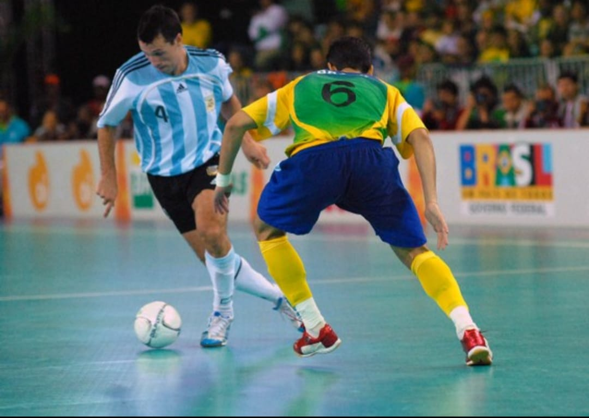
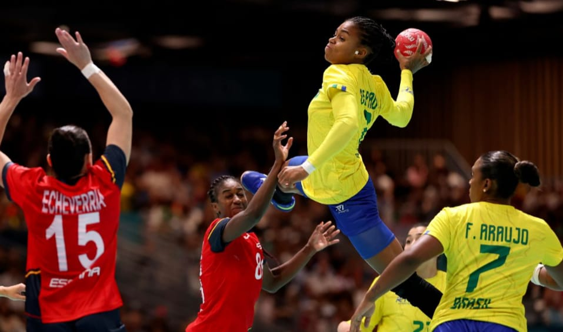
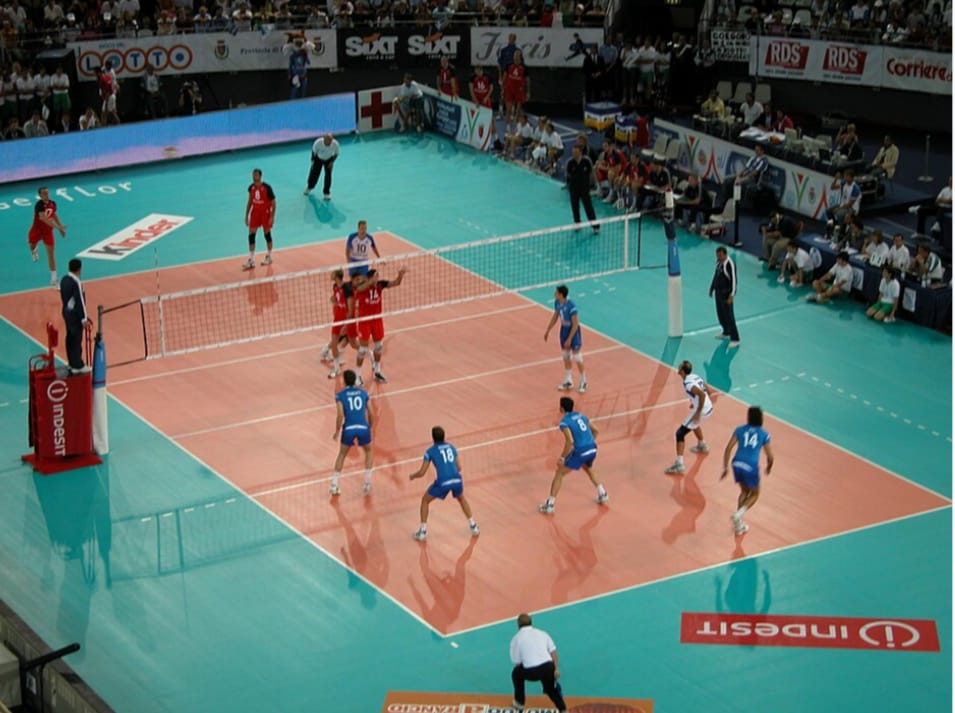
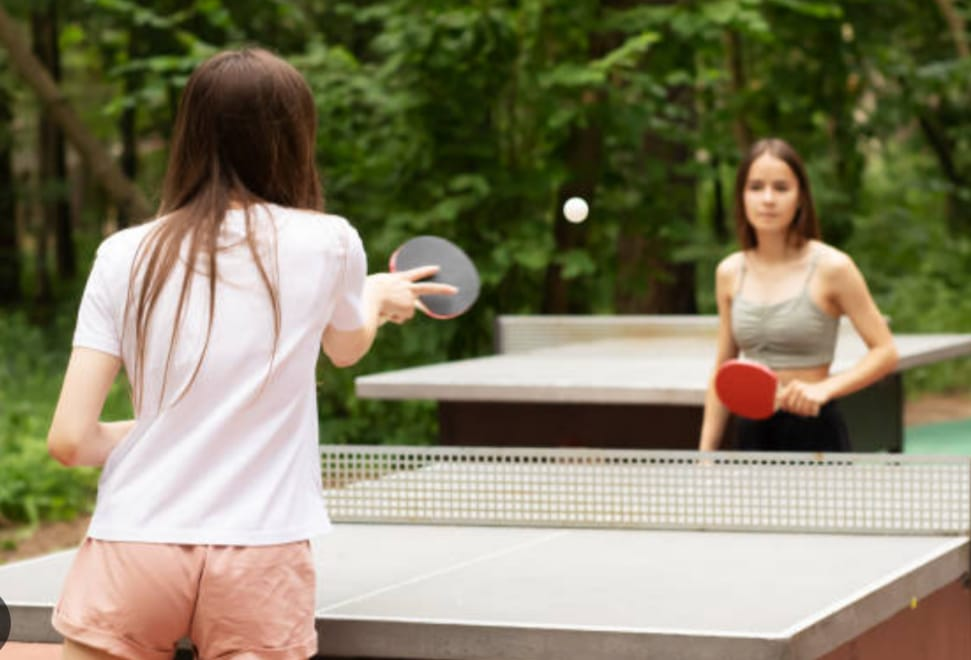
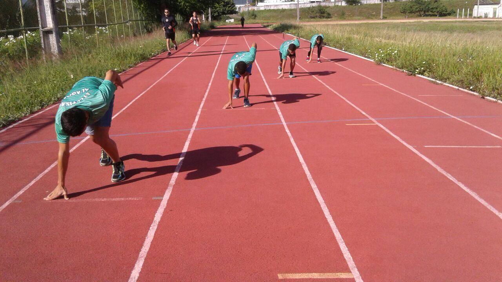
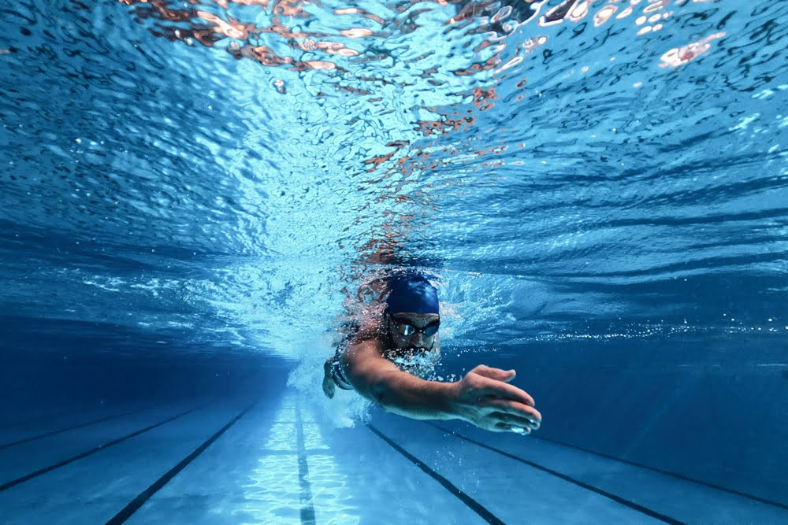

Nossas Modalidades

Futsal
O futsal agita os Jogos Internos do IFAL Arapiraca com partidas vibrantes entre alunos e servidores nas categorias masculina, feminina e mista. A competição lota o ginásio com torcidas organizadas, promovendo grande integração e premiando os times campeões.

Handebol
O handebol agita os Jogos Internos do IFAL Arapiraca com partidas dinâmicas e intensas entre as turmas nas categorias masculina e feminina. A modalidade destaca-se pela força coletiva e técnica em quadra, atraindo grande torcida e promovendo forte integração entre os estudantes.

Basquete
O basquete agita os Jogos Internos do IFAL Arapiraca com disputas dinâmicas e arremessos emocionantes nas categorias masculina e feminina. A modalidade atrai a torcida pela agilidade e técnica em quadra, fortalecendo o trabalho em equipe e a integração entre os estudantes.

Voleibol
O voleibol agita os Jogos Internos do IFAL Arapiraca com ralis emocionantes e grandes jogadas nas categorias masculina, feminina e mista. A modalidade exige alto entrosamento e enche as arquibancadas de energia, destacando-se como um dos esportes mais integradores e celebrados do campus.

Tênis de Mesa
O tênis de mesa agita os Jogos Internos do IFAL Arapiraca com partidas rápidas e de alta concentração nas categorias masculina e feminina. A modalidade atrai a atenção do público pela precisão e reflexos dos atletas, destacando-se como uma das disputas individuais e de duplas mais técnicas e emocionantes do campus.
Xadrez
O xadrez agita os Jogos Internos do IFAL Arapiraca com disputas silenciosas, estratégicas e de pura concentração nas categorias masculina e feminina. Conhecido como o "esporte da mente", o torneio de tabuleiro atrai o respeito do público pela precisão de cada jogada, promovendo o raciocínio lógico e o foco entre os estudantes.

Atletismo
O atletismo agita os Jogos Internos do IFAL Arapiraca com provas de corrida, salto e arremesso que testam a velocidade e a resistência dos estudantes nas categorias masculina e feminina. A modalidade atrai a vibração do público a cada linha de chegada, destacando-se pela superação individual e pelo forte espírito de equipe nos revezamentos.

Natação
A natação agita os Jogos Internos do IFAL Arapiraca com provas de velocidade e resistência que desafiam os estudantes em diferentes estilos nas categorias masculina e feminina. A modalidade ferve o clima da competição a cada braçada e linha de chegada, destacando-se pela superação individual e pela forte vibração da torcida nas piscinas.